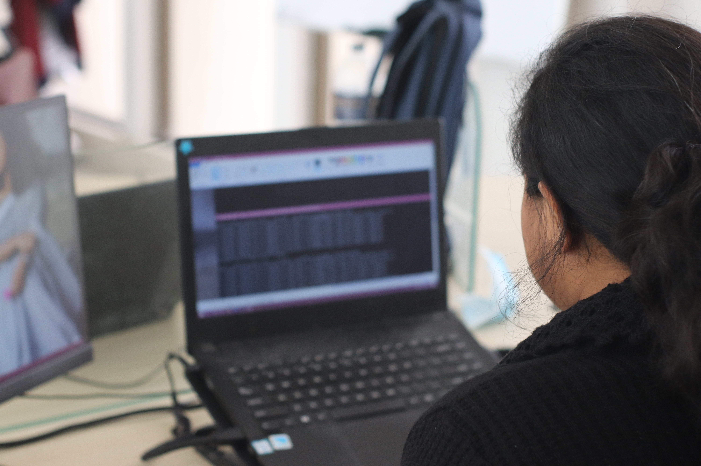

We wonder in the sector of IT of Bangladesh. TARS Software is the software development wing of TARS BINARY that is currently working on app development, web development, software development to solve practical problems of the society, that serve the populace of the country and even abroad. iOS apps, android apps and computer software, ranging from web development to serious software developments that serve the large scale interest of individuals and companies, serve the interests of a large variety of consumers. We work for both customer orders and our own development projects that generate products for our revenue. Meanwhile TARS Software is not being limited to projects or productions only, it also is making opportunities for apps from developers of the country, and teen developers as well.
Through ‘TARS App Centre’, an app store for the apps developed in TARS Software and other developers from the country as well, we are making a platform to represent the software development scenario of our country. Overall, TARS Software is the place where the potential of our future geniuses is represented through.
What drives us, TARS Software, is the enormous potential of our future geniuses. There are a lot of brilliant minds in the engineering universities, who are passionately doing the work of software development by themselves, but lack the motivation and support in the practical fields. There are a lots of juvenile programmers who do their job as a hobby, but lack the proper education on those fields. There is also a huge market of consumers having practical problems that can be solved through software development. If these three can be connected, there will be a network of potential developers and customers, supporting one another. TARS Software focuses on that goal, to utilize our populace and represent them to the audience they need. As has been stated, TARS Software not only works with the current employees, but also programmers from outside, even school-goers.
That proves how dedicated and willful we are to bring up the potential bright minds of Bangladesh and give them their opportunities throughout our facilities.